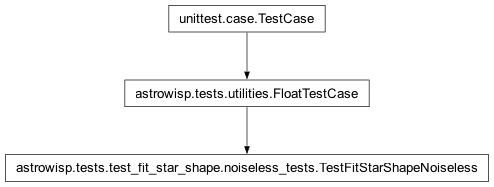

astrowisp.tests.test_fit_star_shape.noiseless_tests module
Class Inheritance Diagram
Test AstroWISP’s fit_star_shape module.
- class astrowisp.tests.test_fit_star_shape.noiseless_tests.TestFitStarShapeNoiseless(methodName='runTest')[source]
Bases:
FloatTestCaseTest piecewise bicubic PSF fitting on noiseless images.
- check_results(result_tree, image_index, sources, num_terms)[source]
Assert that fitted PSF map and source fluxes match expectations.
- Parameters:
result_tree – The result tree containing the PSF fitting configuration and results.
image_index – The index of the image for which to check results within the result tree (the same as the index when fitting was called).
sources – The sources argument used to generate the image that was fit. See same name argument of run_test.
num_terms (int) – The number of terms the PSF map depends on.
- Returns:
None
- create_debug_files(image, source_list, fit_config, sub_image=None)[source]
Create the pair of files used by the C test of PSF fitting.
- Parameters:
image (2D numpy array) – The image being fit.
source_list – The list of sources participating in the fit.
fit_config – The
FitStarShape.configurationof the PSF fitting object used for fitting.sub_image – The index of the image within the list of images being fit simultaneously.
- run_test(sources, psffit_terms)[source]
Assert that a fit of a series of images works exactly.
- Parameters:
sources –
A list of lists of dictionaries specifying the list of sources to fit. Each list of dictionaries specifies the sources to drop on a single image. Each source must contain at least the following, as well as additional variables needed to evaluate psffit_terms:
x: The x coordinate of the source center.
y: The y coordinate of the source center.
psf_args: The arguments with which to create the PiecewiseBicubicPSF for the source. See PiecewiseBicubicPSF.__init__ for details.
psffit_terms[str] – List of expressions involving entries in sources the PSF map will depend linearly on (e.g. ‘x**2 + y’). See
astevaldocumentation for a list of available functions.
- Returns:
None